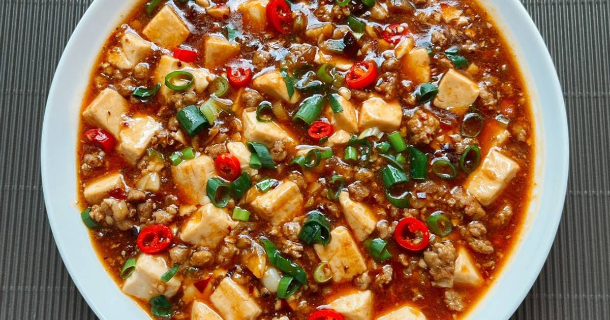

Ma Po Tofu

Description
Mapo Tofu is a classic dish from Sichuan cuisine, celebrated for its bold,
spicy, and numbing flavors. It features soft tofu cubes simmered in a
rich, oily chili-bean sauce, accompanied by minced pork or beef, and
topped with Sichuan peppercorns for a signature tingling sensation. The
dish strikes a beautiful balance between savory, spicy, and aromatic
notes, making it a favorite both in Chinese households and in restaurants
worldwide.
The name “Mapo” roughly translates to “pockmarked old woman,” referencing
the original creator of the dish in 19th-century Chengdu. Today, it is
known for its comforting warmth and fiery kick. When served over steamed
rice, it becomes a satisfying, deeply flavorful meal that showcases the
essence of Sichuan culinary tradition.
Ingredients
- 400g (14 oz) soft tofu (medium-firm or silken)
- 150g (5 oz) ground pork or beef
- 1 tbsp Sichuan peppercorns (lightly crushed or ground)
- 2 tbsp doubanjiang (fermented chili bean paste)
- 1 tbsp douchi (fermented black beans), optional
- 2 cloves garlic (minced)
- 1 tsp ginger (minced)
- 2 scallions (chopped)
- 1 tbsp soy sauce
- 1 tsp sugar
- 1 tsp sesame oil
- 1 tbsp cornstarch (mixed with 2 tbsp water)
- 1 cup chicken broth or water
- Vegetable oil (for frying)
Steps
-
Prepare tofu: Cut tofu into 1-inch cubes. Blanch in
lightly salted hot water for 2–3 minutes to firm it up. Drain and set
aside.
-
Stir-fry aromatics: Heat oil in a wok. Add minced
garlic, ginger, and Sichuan peppercorns. Stir-fry briefly.
-
Cook meat: Add ground pork or beef and stir-fry until
browned.
-
Add sauces: Stir in doubanjiang and douchi. Cook until
the oil turns red and fragrant.
-
Simmer tofu: Add tofu, soy sauce, sugar, and broth.
Simmer gently for 5–8 minutes.
-
Thicken: Stir in cornstarch slurry and gently mix to
thicken the sauce.
-
Finish: Drizzle sesame oil on top and garnish with
chopped scallions and extra ground Sichuan peppercorns.
Home